Modica: Modica and Ragusa are among the eight towns of the Val di Noto rebuilt in late Baroque style after the 1693 earthquake – UNESCO World Heritage together since 2002. Modica is also famous for its chocolate, cold-processed after an Aztec model so it stays grainy.
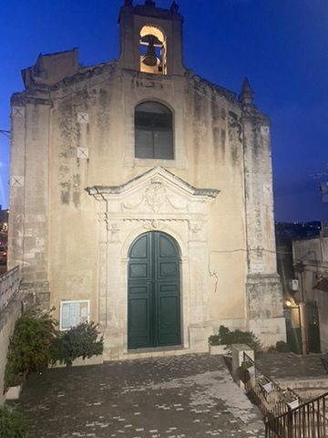
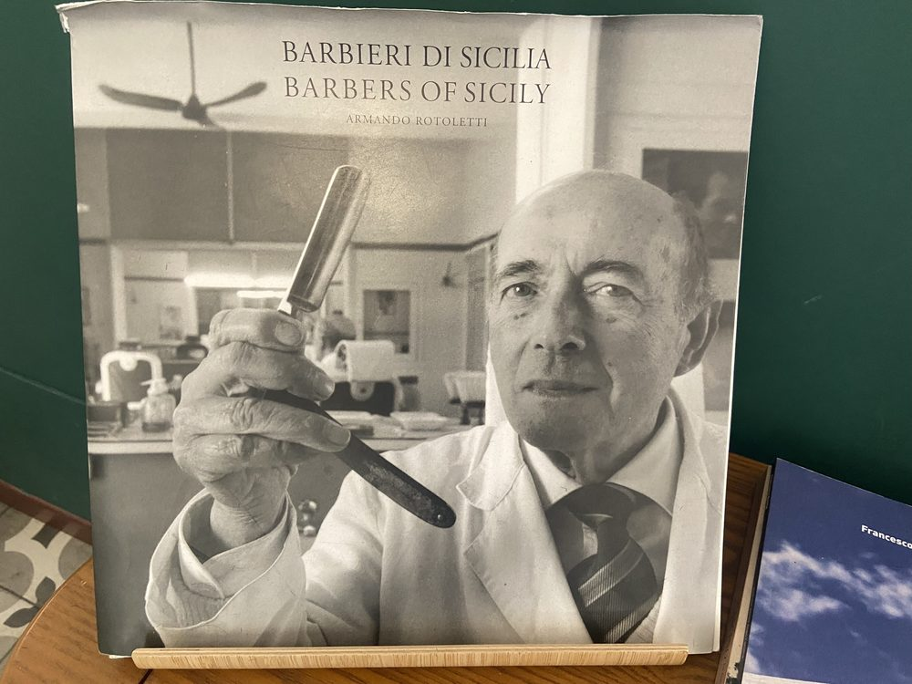
Ragusa Ibla: After the earthquake some residents rebuilt the upper town, while others stayed in old Ibla on its rocky spur – two towns only reunited in 1926. From the church of Santa Maria delle Scale you look out over the whole old town stepping down the slope.
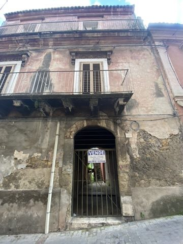
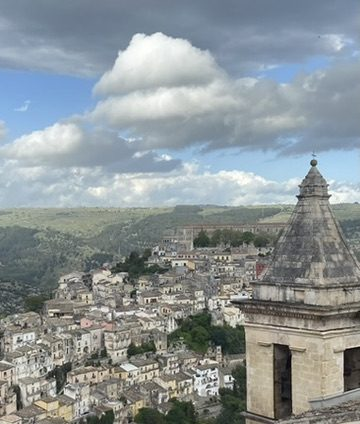
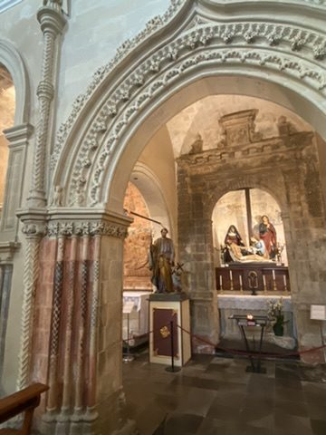
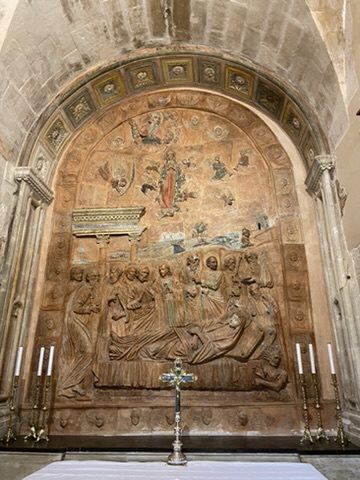
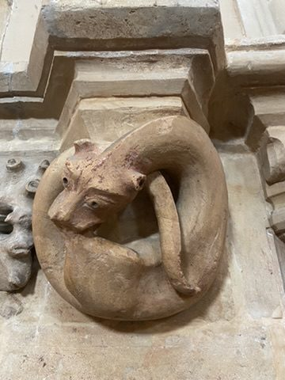
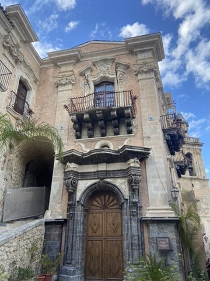
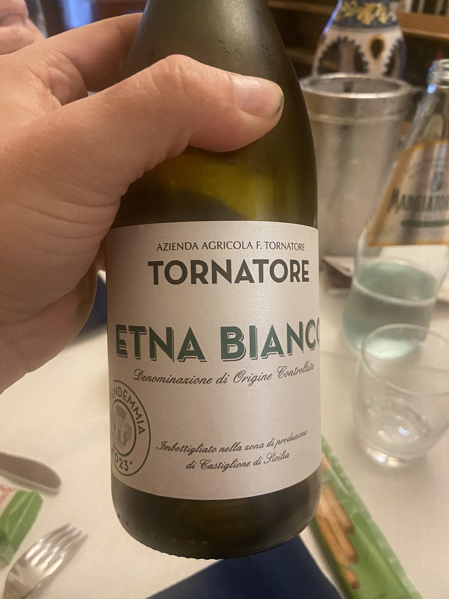
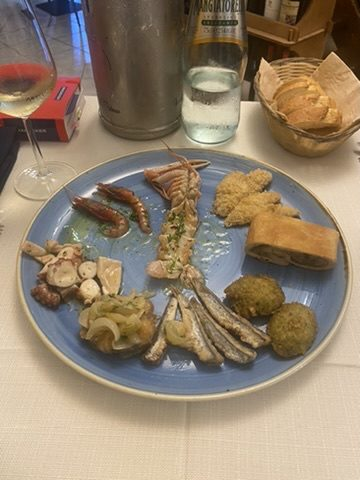
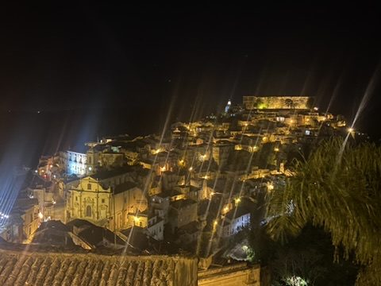